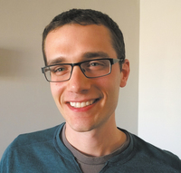

Unique People
This page is dedicated to all people with disablities who were still able
to be in S.T.E.A.M!
If you also have a disbabiltiy and want to be in S.T.E.A.M,
do NOT be discouraged.
Take the challenge and do what you love!
Here are a list of some of these people:
Joni Ericksen Tada
Joni was in a diving accident when she was 17 years. Joni became a quadriplegic but through this tragedy she has been able to share her story, journey, and faith. She paints with her mouth making beautiful works of art!
Collin Diedrich
Collin is a PhD in molecular virology and microbiology and is a second-year post doc at University of Cape Town. He has a learning and reading disability. So therefore, he advocates and speaks for students who learn and think differently..


Tuukka Ojala
Tuukka is a blind Softwarer developer in Finland. He is a strong believer in inclusive design and making software for those with disabilities.
Michael Forzano
Micheal is a 26 year old blind software developer at Amazon who majored in computer science. He uses a laptop with a screen reader software.
Glen Keane and Ed Catmull